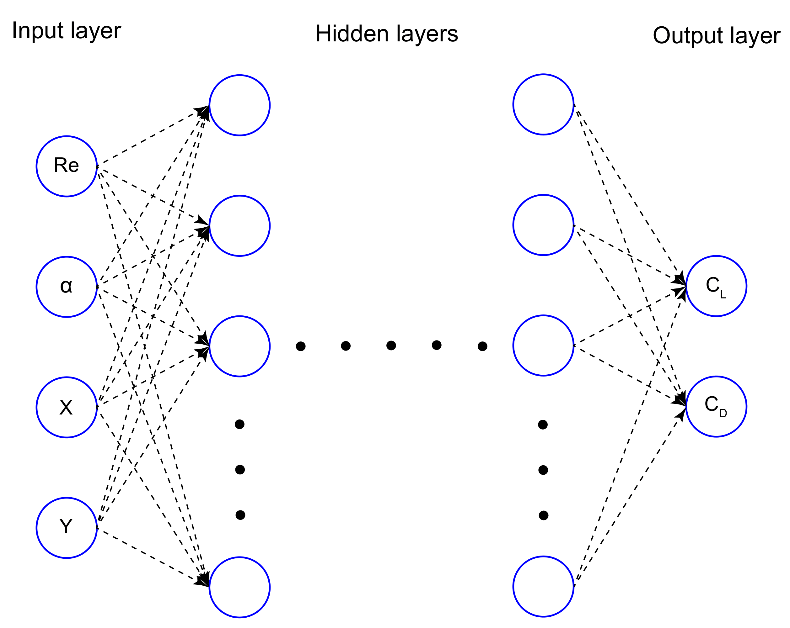
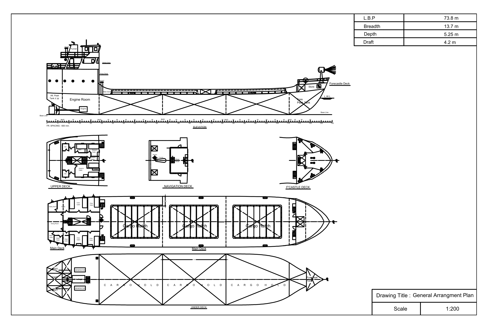

|
Md. Moynul Hasan
Hi, I am Md. Moynul Hasan. I have completed my undergraduate from the Naval Architecture
and Marine Engineering department of Bangladesh University of Engineering and Technology
(BUET), the most prestigious engineering institute in Bangladesh.
In my undergraduate thesis, I have worked on predicting aerodynamic characteristics of airfoils
using artificial neural netowrk, under the supervision of Prof.
Dr. N. M. Golam Zakaria, NAME, BUET.
I have also worked in a research project related to Biomedical Image Processing & Deep Learning, under
the supervision of Assoc Prof. Dr. Taufiq Hasan
, BME, BUET and Prof. Dr. Mohammed Imamul Hassan Bhuiyan
, EEE, BUET. My interests are in Deep Learning & Computational Fluid Dynamics.
Email |
CV (last updated: Aug 2022) |
Google Scholar |
Github
|
|
News
| 2022/10 - I joined BUET as a research assistant. |
| 2022/08 - I graduated from BUET. |
| 2021/08 - I joined Animo.ai as a machine learning engineer intern. |
| 2020/11 - Our work on feature fusion approach for detecting COVID-19 got accepted to ICECE 2020! |
Publications
Published
In review
|

|
Predicting aerodynamic characteristics of airfoils using artificial neural network
Md. Moynul Hasan,
Mohammad Fahim Faisal,
N. M. Golam Zakaria and
Md. Mashiur Rahman
Submitted to Ocean Engineering, 2022
|
Projects
|
|
Speaker Recognition System
The Machine Learning model can recognise speakers with almost 99% accuracy.
[dataset]
[code]
|
|

|
Design Of a General Cargo Ship Of 2500 Tonnes Cargo
Capacity In The Route Of
Dhaka-Chittagong-Dhaka
Supervisor: Dr. N. M. Golam Zakaria
The project is submitted to the Department of Naval Architecture &
Marine Engineering, BUET in partial fulfillment of the requirement for the
course of Ship Design Project and Presentation.
|
|
{kind=link}